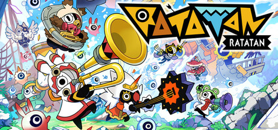
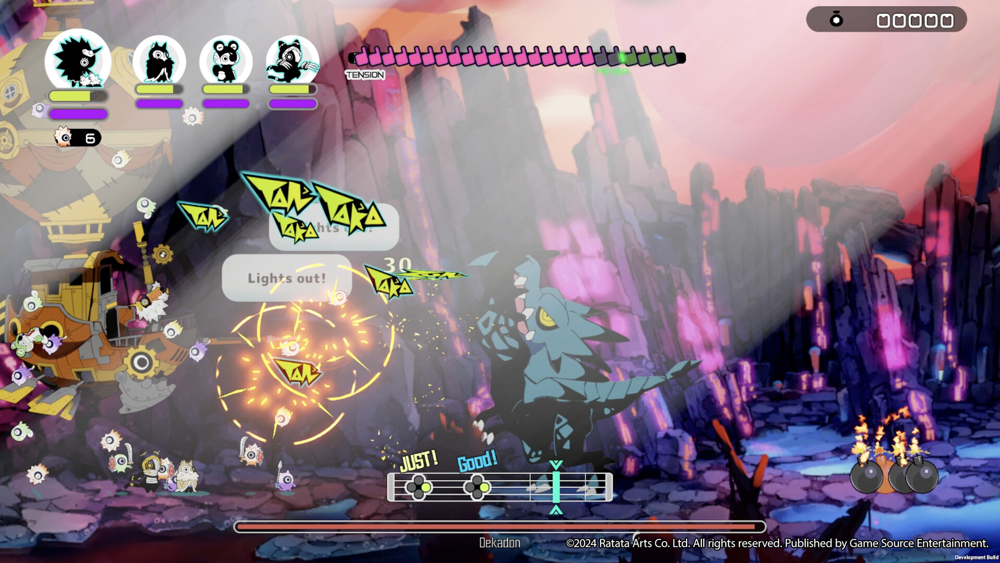
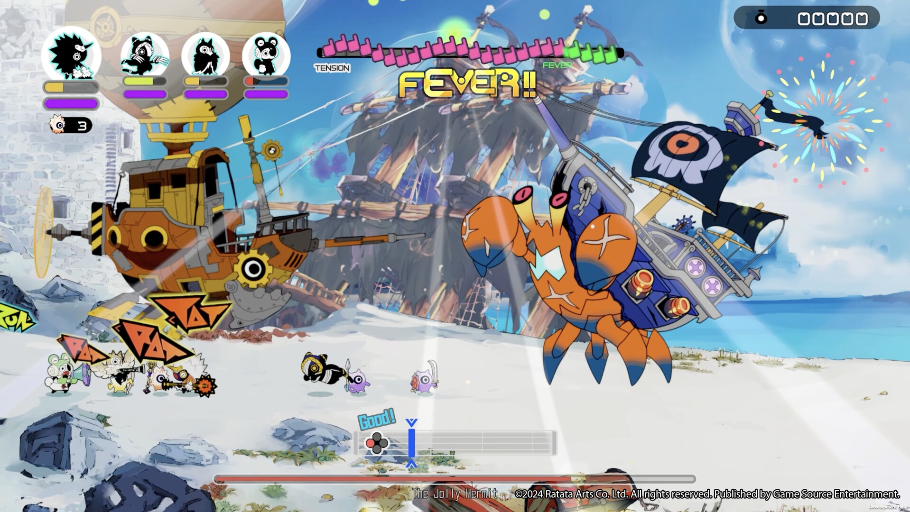

라타탄 출시일 10월 15일, 기종별 판매 형태랑 스팀 얼리 액세스 승계까지
라타탄이 7월 16일 일정에서 한 차례 미뤄진 뒤로, 기종이랑 판매 형태 소식이 여기저기 흩어져 있어서 헷갈리기 쉬워요.
결론부터 말하면 라타탄은 2026년 10월 15일 목요일에 PS5·Xbox Series X|S·스위치 2·PC(스팀)로 정식 출시됩니다. 이 글은 10월 13일 기준으로 정리했어요.

나팔 든 캐릭터들과 타이틀 로고가 보이는 스팀 상점 대표 이미지예요
이미지 출처: 스팀 상점 – Ratatan · 네이버 본문엔 받아서 재업로드 권장
라타탄 출시일은 정확히 언제인가요
네 기종 모두 10월 15일 목요일에 같이 나오고, 기종별 날짜 차이는 없습니다.
원래는 7월 16일 출시 예정이었는데, 6월 25일 공지로 10월 15일로 미뤄졌어요. 사유로 내놓은 건 아래 세 가지입니다.
- 온라인 멀티플레이 안정화와 버그 수정
- 플랫폼별 최종 조정
- 스팀 얼리 액세스에서 받은 피드백 반영
검색하면 7월 16일 출시라고 적힌 예전 글이 아직 눈에 띄는데요, 그건 연기 전 일정이라 지금 기준으로는 맞지 않아요. 소식이 나온 순서대로 놓으면 흐름이 이렇게 됩니다.
| 날짜 | 있었던 일 |
|---|---|
| 2025년 9월 18일 | 스팀 얼리 액세스 시작(스팀 표기, 퍼블리셔 공지는 9월 19일) |
| 2026년 6월 25일 | 7월 16일에서 10월 15일로 연기 공지 |
| 2026년 9월 16일 | 콘솔 예약 시작, 1.0 출시 콘텐츠 공개 |
| 2026년 9월 22일 | 한국어판 패키지 예약 시작 |
라타탄은 어떤 기종으로 나오나요
라타탄은 PS5·Xbox Series X|S·스위치 2·PC 네 기종으로 나오고, H2 한국어판 발표는 PC·PS5·스위치 2 세 기종입니다.
| 기종 | 판매 형태 | H2 한국어판 | 비고 |
|---|---|---|---|
| PS5 | 패키지(디스크) | 발표 | 한국어판 패키지 있음 |
| 스위치 2 | 패키지(게임카드) | 발표 | 한국어판 패키지 있음 |
| PC(스팀) | 확인된 PC 판매처: 스팀 | 발표 | 얼리 액세스 중, 10월 15일 정식 전환 |
| Xbox Series X|S | 디지털(한국 스토어 사전 주문) | 발표 없음 | 스토어 페이지는 있고 한국어 여부는 미공개 |
스팀만 얼리 액세스를 먼저 거쳤고, 콘솔 세 기종은 단계가 따로 없어서 10월 15일이 첫날이에요. Xbox는 H2 한국어판 발표 대상은 아니지만 한국 스토어 페이지가 열려 있고, 지원 언어는 11개라고만 적혀 있어서 한국어가 들어 있는지는 거기서 알 수 없네요.
라타탄 한국어판 패키지 가격과 예약 특전은 어떻게 되나요
한국어판 패키지 '데이원 에디션'의 소비자가는 49,800원입니다.
한국어판 패키지는 본편 하나만 담긴 게 아니라 부가 구성이 같이 묶여 나와요. 구성은 이래요.
- 본편
- 코붕 세트
- 무기·액세서리 세트
- 육성 재료 세트
- 무기 '영령도 쓱쓱소드'(한국 표기)
Xbox 한국 스토어에도 '영령도 쓱쓱소드'가 무료 사전 예약 특전 애드온으로 올라와 있어요. 자세한 정보를 확인할 수 있는 곳으로는 H2 공식 홈페이지, 다이렉트 게임즈, 플레이스테이션 스토어, 닌텐도 온라인 스토어, H2몰이 안내됐다고 게임포커스가 전했어요. 가격은 기준이 달라서 한 표에 모았어요. Xbox 가격은 모두 한국 스토어의 사전 주문 표기예요.
| 구분 | 가격 | 기준과 비고 |
|---|---|---|
| 한국어판 패키지 데이원 에디션(PS5·스위치 2) | 49,800원 | 소비자가 |
| Xbox 한국 스토어 기본판 | 39,510원 | 정가 43,900원에서 10% 할인, 사전 주문 |
| Xbox 한국 스토어 디럭스 에디션 | 45,360원 | 정가 50,400원에서 10% 할인, 사전 주문 |
| 스팀 얼리 액세스 | 27,000원 | 얼리 액세스 가격, 정식 가격은 스팀 페이지에 미정으로 표기 |
| 해외 콘솔 Standard | $31.49 | 정가 $34.99에서 10% 예약 할인, WorthPlaying 보도, 예약 특전 전설 무기 'Spirit Sword Banbansord' |
| 해외 콘솔 Deluxe | $35.99 | 정가 $39.99에서 10% 예약 할인, WorthPlaying 보도, 특수 무기·액세서리·코붕·강화 재료 세트 포함 |
| 플레이스테이션 스토어·닌텐도 온라인 스토어(한국 디지털) | 미공개 | 원화 가격이 아직 보이지 않아요 |
달러 가격은 해외 예약 기준이라 한국 판매가로 그대로 환산하시면 안 돼요. 콘솔 쪽 원화 가격은 패키지 49,800원과 Xbox 한국 스토어의 사전 주문가만 올라와 있고, 플레이스테이션 스토어와 닌텐도 온라인 스토어의 원화 가격은 10월 13일 기준으로 찾지 못했어요.
스팀 얼리 액세스로 하던 사람은 세이브와 특전이 어떻게 되나요
스팀 얼리 액세스 세이브는 정식판으로 이어지고, 얼리 액세스 구매자 특전은 1.0 출시 때 자동으로 지급됩니다. 해외 매체 보도에 나온 내용으로, 세이브 승계는 FullCleared, 특전은 WorthPlaying 쪽이에요. 특전은 'Banbansord'라는 이름으로 1.0 출시 때 따로 신청 없이 들어오고, Deluxe 추가분은 정식 출시일부터 스팀에서 판다고 해요. 이미 예약한 분의 Deluxe 보너스는 해외 안내상 DLC 코드 형태로 받는데요, 한국어판 패키지 예약자에게 같은 보너스가 붙는다는 안내는 아직 나오지 않았어요.
라타탄은 어떤 게임이고 PC 사양은 어느 정도인가요
라타탄은 박자에 맞춰 싸우는 리듬 로그라이크 액션이고, 최대 4인 온라인 협동을 지원해요.
- 개발은 TVT와 Ratata Arts이고, 파타퐁 제작진이 참여했어요.
- 글로벌 퍼블리셔는 Game Source Entertainment예요.
- 한국어판 유통은 H2 인터렉티브가 맡습니다.
파타퐁은 2007년 12월 PSP로 일본에서 처음 나온 시리즈로, 북을 뜻하는 버튼을 리듬에 맞춰 눌러 군대를 움직이는 리듬·전략 장르로 소개돼요(Wikipedia 기준). 해외 매체 AUTOMATON은 라타탄을 파타퐁의 정신적 후속작으로 소개한 적도 있어서, 박자에 맞춰 싸우는 방식이 낯설지 않은 분도 계실 거예요.

화면 아래 리듬 바에 판정이 뜨면서 보스와 맞붙는 전투 장면이에요
이미지 출처: 스팀 상점 – Ratatan · 네이버 본문엔 받아서 재업로드 권장
PC 사양은 스팀 표기(얼리 액세스 기준)로 이래요.
| 항목 | 최소 | 권장 |
|---|---|---|
| 운영체제 | Windows 10 64bit | Windows 11 64bit |
| CPU | 듀얼코어 2.4GHz | 쿼드코어 2.4GHz |
| 메모리 | 8GB | 16GB |
| 그래픽 | GTX 950 / R7 360 / Intel HD 630 | RTX 2060 / RX 5600 XT / Arc A580 |
| 저장 공간 | 10GB | 10GB |
최소 사양에 GTX 950급과 Intel HD 630 같은 내장 그래픽까지 이름이 올라 있어서 문턱이 낮은 편이에요. 최소와 권장의 차이도 CPU 코어 수, 메모리 8GB 대 16GB, 그래픽 세대 정도예요.
정식판 1.0에서는 뭐가 달라지나요
정식판 1.0에서는 이야기와 사운드 양쪽이 모두 늘어납니다.
얼리 액세스 이후로 추가되는 내용은 아래 네 가지로 정리돼요.
- 에피소드 3과 4가 새로 열려요
- 마지막 월드와 최종 보스가 등장해요
- 얼리 액세스에서 선보인 Dark Ratatan이 전원 집결해요
- 오케스트라로 녹음한 사운드트랙이 들어와요

화면 위쪽 FEVER 표시와 아래쪽 리듬 바가 보이는, 얼리 액세스 빌드 기준 전투 화면이에요(스팀 상점 스크린샷)
이미지 출처: 스팀 상점 – Ratatan · 네이버 본문엔 받아서 재업로드 권장
자주 묻는 질문
Q. 라타탄 출시 시각은 몇 시인가요?
공지에는 날짜만 나와 있고 시각은 아직 안 나왔어요. 스토어별 상품 페이지에 시각이 올라오면 그쪽이 기준이 돼요.
Q. 라타탄이 Xbox Game Pass에 들어오나요?
Game Pass 카탈로그에 포함된다는 안내는 아직 못 찾았어요. 다만 Xbox 스토어 한국 페이지에는 콘솔 온라인 멀티플레이에 Game Pass 구독이 필요하다고 적혀 있어요(구독은 별도 판매). 상품 자체는 유료로 올라와 있고요.
Q. 한국어는 자막이랑 음성 중 어디까지 되나요?
스팀 지원 언어에 한국어가 있고, 퍼블리셔 공지에는 자막 언어로 한국어가 들어 있어요. 음성 언어는 따로 안내된 게 아직 없어서 더빙까지라고 단정하기는 일러요.
Q. PS4판이나 스위치 1세대판은 어떻게 됐나요?
개발사가 2026년 4월에 PS4판과 스위치(1세대)판 취소를 발표했어요(Noisy Pixel 보도 기준). 레거시 기종의 예상 판매량이 라이선스 비용을 감당하지 못한다는 이유였어요. 퍼블리셔 페이지나 일부 기사에 PS4가 남아 있는 건 예전 표기입니다. Xbox One 판은 취소 여부가 확인되지 않았어요.
Q. 온라인 협동이 안 잡히면 뭘 봐야 하나요?
스팀 사양 안내에 온라인 협동은 대칭형이 아닌 NAT 유형(개방형·보통형)의 인터넷 연결이 필요하다고 적혀 있어요. 공유기나 콘솔 네트워크 화면에서 NAT 유형이 어떻게 잡히는지 먼저 보시면 됩니다.
라타탄 출시일 정리
날짜는 하나로 정해졌으니 고민할 건 어디서 어떻게 즐기느냐예요. 하시는 방식에 따라 먼저 볼 곳이 달라져요.
- 한국어판 패키지를 노린다면 PS5·스위치 2 예약처부터 보시면 돼요.
- PC 얼리 액세스를 하고 계시다면 세이브와 특전이 따라오니 15일을 기다리시면 돼요.
- 디지털 콘솔판은 Xbox 한국 스토어의 사전 주문가부터 보시고, 플레이스테이션과 닌텐도는 출시 당일 스토어 페이지를 확인하시는 게 좋아요.
저는 출시 당일 스토어 페이지가 어떻게 열리는지 지켜볼 생각이에요. 15일에 같이 즐겁게 달려 봐요~
기사 원문
· 게임포커스 한국어판 패키지 보도
· PNN 데이원 에디션 구성 보도
· 루리웹 기종 보도
· VGChartz 연기 보도
· WorthPlaying 콘솔 예약·1.0 콘텐츠 보도
· FullCleared 연기·예약 특전 보도
· Noisy Pixel PS4·스위치 판 취소 보도
· AUTOMATON 얼리 액세스 연기 보도
참고한 곳 (2026.10.13 기준)
· 스팀 상점 – Ratatan
· Xbox 한국 스토어 – Ratatan
· Game Source Entertainment 공식 뉴스(얼리 액세스 일정)
· Game Source Entertainment 공식 뉴스(연기 공지·자막 언어)
· Wikipedia – Patapon